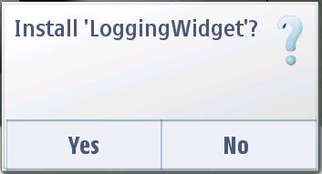
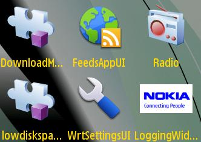
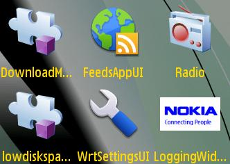
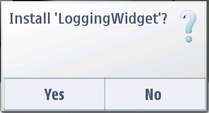
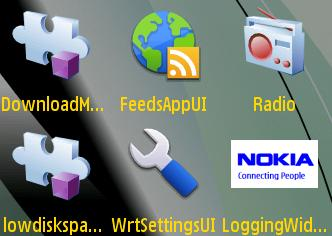

 
Logging Service API - Example Widget Documentation
This document describes the Logging Widget application for Nokia Symbian^3 SDK. Read this document if you are a web developer, testing professional, or the product manager working on this product. Application Developers looking to log, read events from the event logs using symbian logging Classes.
Widgets are lightweight Web applications developed using the same well-known standards-based Web technologies – AJAX, CSS, HTML and JavaScript – used to create Web pages. Developers can use it as a reference and testers can use it to test the relevant functionality. This widget is intended for S60 5.0 SDK. Developers should be able to develop professional applications.
Example Widget Application is designed to run on Nokia Symbian SDK. It will be designed such that a developer takes it as a reference to create useful applications for any functionality supported on SDK. It will be designed to let the testers to test the functionality
Example widget is not intended to give full featured implementation. This example will implement the Messaging Service APIs. It gives only messaging functionalities. It only lists the Draft messages from the Draft folder.
The example widget uses the WRT 1.0 API. The Web Runtime (WRT) environment supports the following Internet technology standards:
HTML 4.01
The basic HTML standards are supported.
XHTML 1.0
The basic XHTML standards are supported.
CSS Level 2 revision 1 (CSS 2.1)
JavaScript 1.5 (ECMA-262 3rd Edition)
The standard JavaScript features are supported. The WRT environment also provides some additional features that are mobile device specific.
The following additional JavaScript features are supported in the WRT environment:
Logging widget gives usability of Logging service APIs with simple user interface. Widget allow user to display/add/delete application logs (Call Log/Messaging Log etc.) with the simple user interface. Application developer can use it to add, read and delete events happening in the system. Keeping the interface simple benefits the application development process greatly.
Use Cases

Example Widget Application does not support internationalization